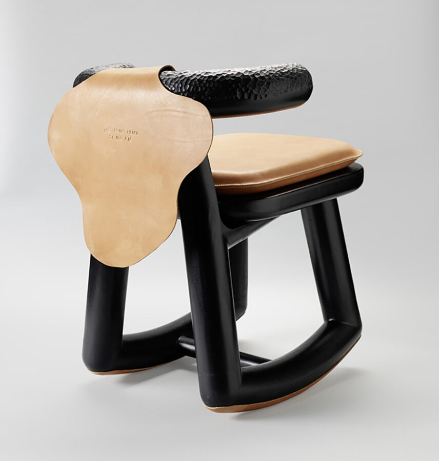

Norman Teague Lecture
Join us for a lecture by designer Norman Teague followed by an audience Q & A.
Norman Teague’s (MFA 2016) overarching goal extends beyond the mere act of design; it is a mission to rectify the narratives of design that falter with gaps, omissions, and oversights. His work seeks to reintegrate the history and ongoing contributions of foundational Black labor, Black craftsmanship, and Black design into our collective cultural identity. In this pursuit, Teague engages in a thoughtful dialogue with overlooked figures such as Chuck Harrison, the trailblazing African American head of design for Sears Roebuck. Harrison’s legacy, marked by the creation of more than 750 products integral to post-war American consumer life, including iconic items like Craftsman power tools and the beloved Viewmaster, serves as a source of inspiration and connection for his pedagogy.
Teague endeavors to make his design practice visible and accessible to his immediate community. This involves strategic initiatives such as public installations in parks and contributions to festival design, igniting local conversations around the impact of design. While originating at a grassroots level, these conversations have a ripple effect, resonating nationally and globally.
In 2024–25, Teague curated Designer’s Choice: Jam Sessions, a solo exhibition at the Museum of Modern Art, New York. The exhibition reimagined iconic design objects through the lens of generative AI, cultural memory, and Black craft, creating new dialogues within the museum’s permanent collection and challenging the boundaries of design history.
Teague also participated in Everlasting Plastics, the 2023 United States pavilion at the Venice Architecture Biennale. His work examined the extractive dynamic between the global North and South, in which exploited petroleum eventually returns to the South as ever-accumulating streams of plastic waste. Reinventing a method of extruding consumer plastic into colored coils inspired by Ghanaian Bolga and Agaseke basket weavings, Teague created vibrant vessel forms that elevate petrochemical detritus through craft, allowing them to be viewed as art companions to the age-old craft of basketry—simultaneously signaling an Afro-Futurist, dystopian aesthetic.
Teague is currently working with Dorian Sylvain to develop a pavilion for Anna and Frederick Douglass at a Chicago park recently gone through a name change from Jefferson Douglass Park to Anna and Frederick Douglass Park. Additionally, as the co-founder of blkHaUS studios alongside Fo Wilson, Teague completed a diverse range of projects in Chicago and Nigeria, catering to clients ranging from Solange Knowles to the Museum of Contemporary Art. He is an assistant professor at the University of Illinois Chicago’s School of Design.
Presented in partnership with SAIC Alumni Engagement
This event will be live captioned by Communication Access Realtime Translation (CART) services. The auditorium is wheelchair accessible and hearing assisted devices are available. For additional access requests, visit saic.edu/access.